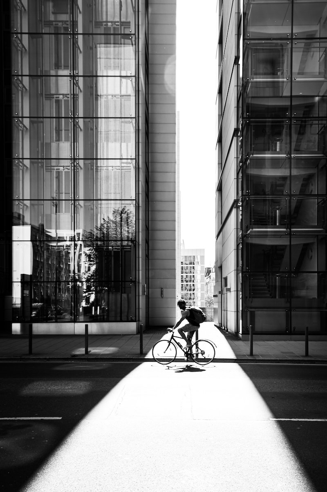

-

All who cycle are my friends
2020.4.27
A rider from Stockholm interviewed for an article about the phenomenon notes that riding a bike imparts a feeling of freedom to the rider…
-
Swedish riders and enthusiasts
2020.3.11
There are also several bicycle clubs throughout Sweden with a fixed-gear niche. Komet Club Rouler is a club based in Gothenburg, annually arranging Svart Kat…
-

The Australian fixie culture
2020.2.29
Online stores in Australia ship partially-assembled bikes directly to consumers, considerably undercutting prices at typical brick and mortar stores…
More recently the “fixie” has become a popular alternative among mainly urban cyclists, offering the advantage of simplicity compared with the standard multi-geared bicycle.
One Gear,
Many Variations
Stripped-Down
Performance
Without the added parts required for a fully geared drive train—derailleurs, shifters, cables, cable carriers, multiple chain rings, freewheel hub, brazed-on mounting lugs—a fixed gear bicycle weighs less than its geared equivalent.
A collection built for regular commuters
Riders unknown to each other commonly greet each other when on bikes. As in many subcultures, this feeling of belonging is a key factor in recruiting and retaining participants.
“I like to ride. Fixed gear. No brakes. Can’t stop. Don’t want to, either.”
Premium Rush (2012)